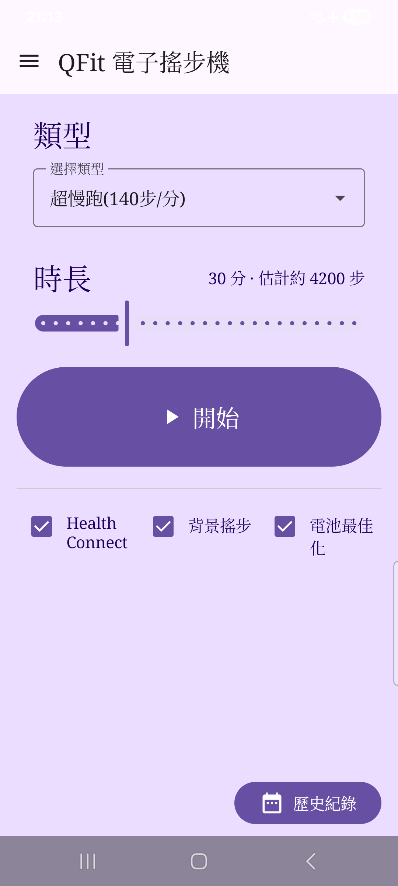
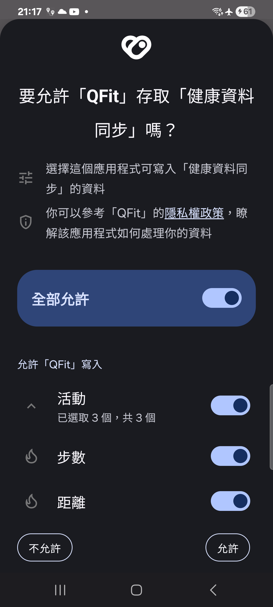
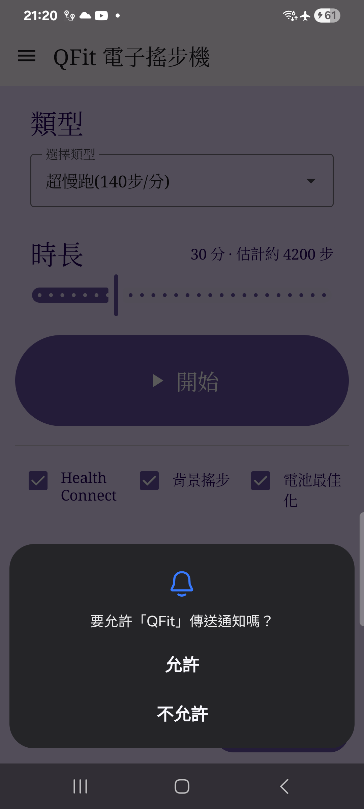
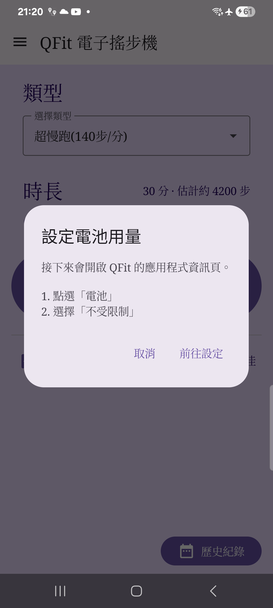
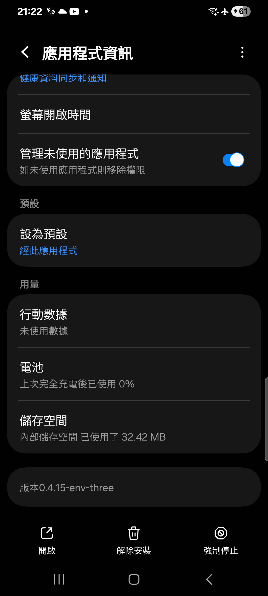
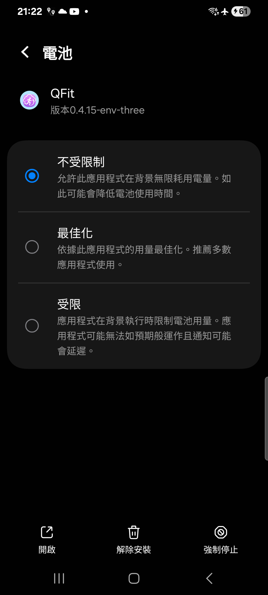
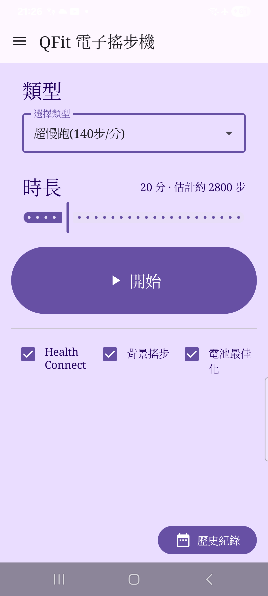
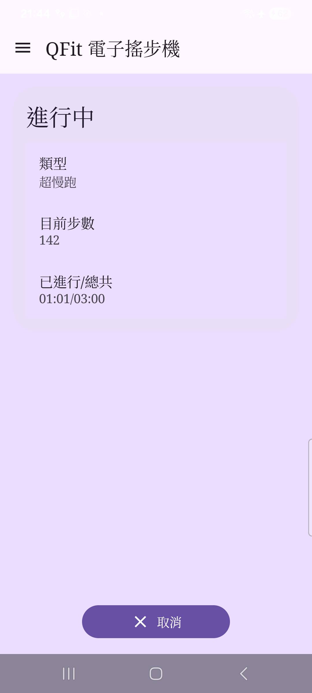
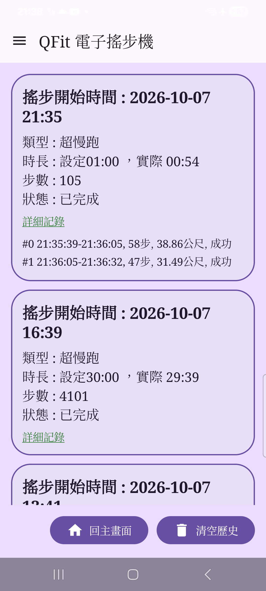

0. 開始之前
- Android 手機（建議 Android 12 / API 31 以上）
- 已安裝 Health Connect（多數新機已內建；沒有可到 Play 商店安裝）
- QFit 安裝檔（APK）。目前以側載（sideload）為主
重要：QFit 寫入的是模擬步數，僅供個人測試與娛樂。
請遵守下游健康／遊戲 App 的使用條款；使用風險由使用者自行承擔。
1. 安裝並開啟 QFit
- 用手機開啟 APK（或先傳到手機再點安裝）。
- 若系統提示「不允許未知來源」，到設定允許該來源後再安裝。
- 安裝完成後開啟 QFit，會看到主畫面：類型、時長、開始，以及下方三個勾選項目。

圖 1 · 主畫面總覽
2. 允許 Health Connect 寫入
第一次開啟時，系統通常會自動跳出 Health Connect 權限畫面。
請允許 QFit 寫入步數、距離、運動等資料。
- 在權限畫面勾選／允許所需項目後確認。
- 回到主畫面，確認 Health Connect 已打勾。
- 若沒有自動跳出，或之後取消了權限：點主畫面的 Health Connect 再授權一次。

圖 2 · Health Connect 權限
小提醒：QFit 不需要登入 Google 帳號，也不會把帳號交給開發者。
資料寫在這支手機的 Health Connect 裡，供其他 App 讀取。
3. 確認「背景搖步」
主畫面中間的 背景搖步 預設為開啟（建議維持開啟）。
開啟時會在通知列顯示進行中通知，比較不容易被系統清掉後台。
- 確認 背景搖步 已打勾。
- Android 13 以上若跳出「通知」權限，請允許（這樣通知列才會出現「搖步中」）。

圖 3 · 背景搖步
若取消「背景搖步」，就不會出現通知列，但關屏後較容易被系統殺掉，
步數追上牆鐘的穩定度會變差。一般使用請保持開啟。
4. 設定「電池最佳化」為不受限制
這一步很重要：關屏、睡覺模式時，QFit 才比較能準時把段落步數寫進 Health Connect。
- 點主畫面的 電池最佳化。
- 會先出現說明視窗，內容大致是：接下來開啟應用程式資訊 → 點「電池」→ 選「不受限制」。
- 按 前往設定。
- 在 QFit 的應用程式資訊頁，點 電池。
- 選擇 不受限制（部分手機文案可能是「不限制」／「Unrestricted」）。
- 用返回鍵回到 QFit，確認 電池最佳化 已打勾。

圖 4a · 電池設定說明

圖 4b · 應用程式資訊頁

圖 4c · 選「不受限制」
不同品牌選單路徑可能略有差異，但目標相同：讓 QFit 的電池用量為
不受限制。若勾選沒立刻更新，回 App 主畫面再看一次即可（離開設定回來會自動重新檢查）。
5. 選擇類型與時長
- 類型：第一次預設是 超慢跑。可改成散步／慢跑／馬拉松／衝刺。
- 時長：左右拖曳滑桿。第一次建議用較短時間（例如 1～5 分鐘）熟悉流程；預設約 20 分鐘。
- 標題列右側會顯示估計步數（分鐘 × 該類型步頻）。

圖 5 · 類型與時長
6. 按「開始」並等待完成
- 確認三個勾選都就緒後，按紫色的 開始。
- 進入「進行中」畫面，會看到目前步數與已進行／總共時間。
- 若「背景搖步」有開，通知列也會顯示搖步中。
- 時間到會自動結束；也可按 取消（會再確認一次）。取消後不會再寫入新的步數，但已經寫進 Health Connect 的會保留，歷史會標成「已取消」。

圖 6 · 進行中
建議第一次測試：設 1～3 分鐘、畫面保持開啟，看步數是否慢慢增加。
確認沒問題後，再試關屏／較長時間。
7. 查看歷史紀錄
- 回主畫面後，右下角按 歷史紀錄。
- 每一筆會顯示開始時間、類型、時長、步數、狀態（已完成／已取消）。
- 點綠色底線的 詳細記錄 可展開每一小段的寫入結果。
- 若要清空本機歷史，按 清空歷史（不會刪除 Health Connect 裡已寫入的步數）。

圖 7 · 歷史紀錄
8. 常見問題
Q. Health Connect 沒打勾？
再點一次 Health Connect 授權；並確認手機已安裝 Health Connect。
Q. 電池最佳化設了還是沒勾？
確認選的是「不受限制」。回到 QFit 後畫面會自動重查；仍不行可完全滑掉 App 再重開。
Q. 關屏後步數好像停住？
先確認「背景搖步」與「電池最佳化」都已開啟。亮屏回來後，App 會盡量把到期段落追上牆鐘。
Q. 其他 App 看不到步數？
到 Health Connect 確認該 App 有讀取權限，且資料來源包含 QFit 寫入的紀錄。
Q. 左上選單是什麼？
「關於」：用途說明、免責聲明、版本號碼。